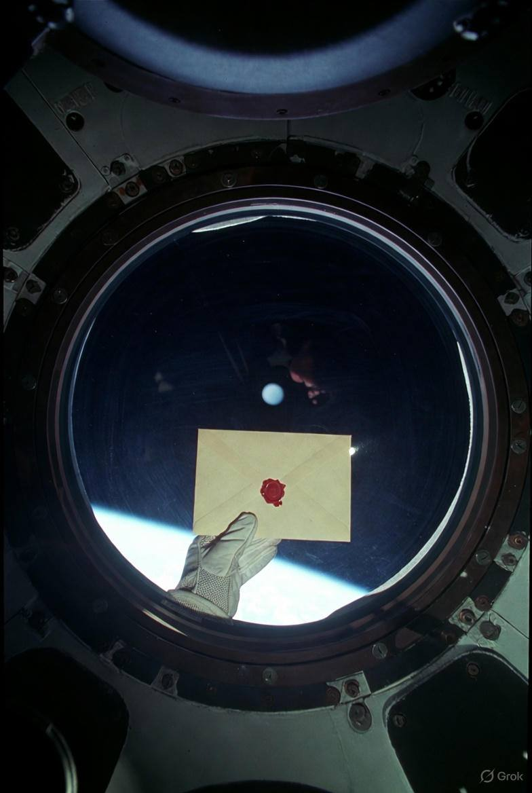
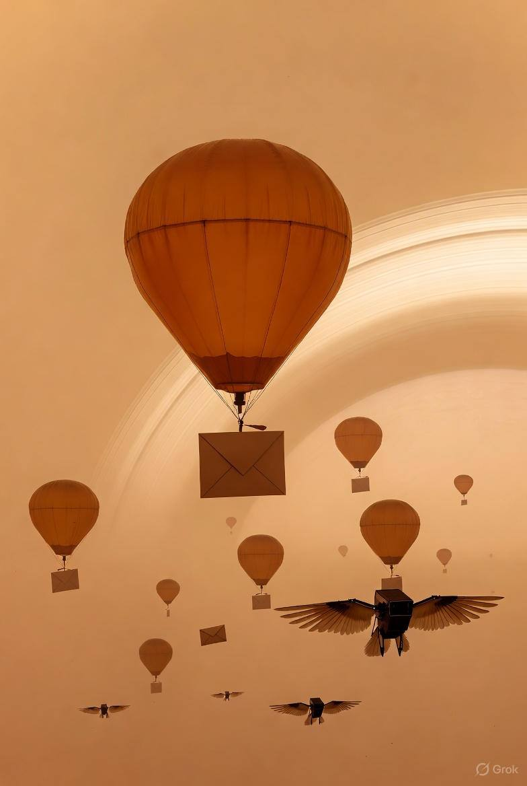
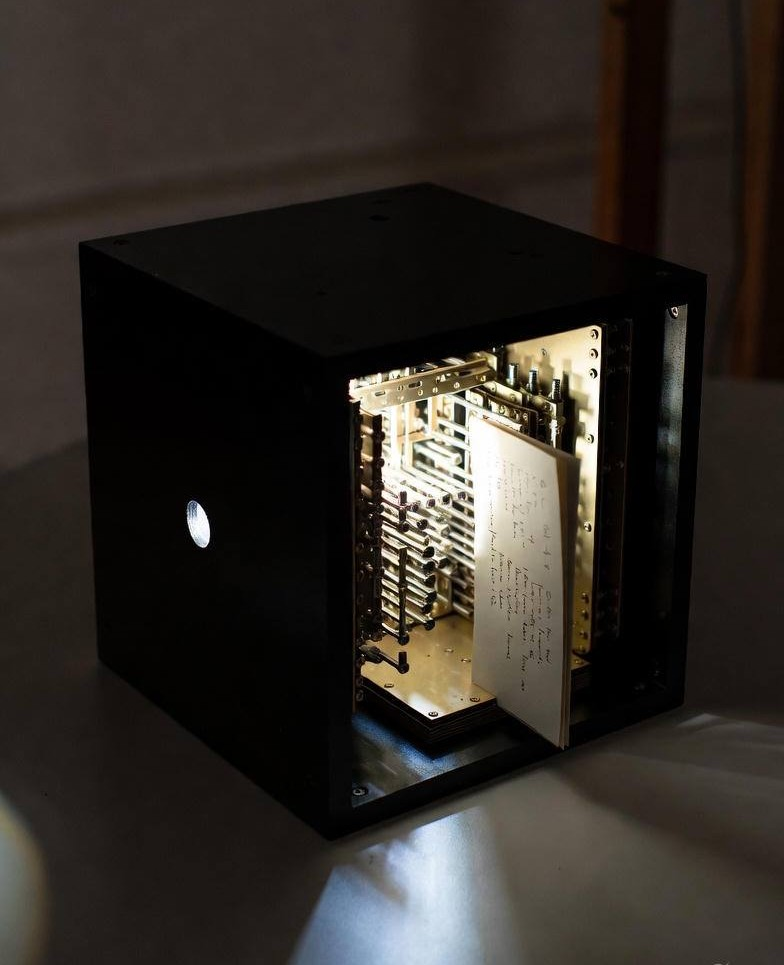

KOSMOEULEN POST
Analoge Wärme im digitalen Raum. Ein Stück Zuhause im All.
Warum wir?

Wer sind wir?
So geht es:
Die Brücke zwischen den Welten
1. Der Scan der Seele

2. Quanten-Reise

3. Manifestation


Mias Geschichte
Zum Radiospot
Klicken, um das Audio-Erlebnis zu starten
→
Emotionale Telemetrie
Status
In Übermittlung
Signalqualität
98% Stabil
Passiert Sektor: Orion-Nebel